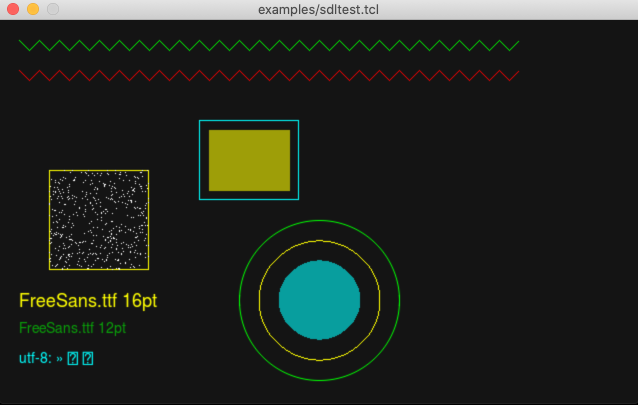

Wednesday, 28 August 2024
Jim Tcl version 0.83
ANNOUNCE: Jim Tcl version 0.83
Jim Tcl 0.83 has been released and is available from:
https://github.com/msteveb/jimtcl
Find out all about Jim Tcl at http://jim.tcl.tk/
CHANGES SINCE VERSION 0.82
This release contains bug fixes plus a number of additional features. A summary is below. See git for the full changelog.
Thanks to everyone who contributed to this release.
Bugs fixed in version 0.83
stacktrace- support stack frames with no cmdvwait- now with -signal, waits on the correct variableregexp- fix check for termination in [[:class:]]regexp- fix incorrect check for invalid escape sequence at end of charset- fix rare crash on shutdown
subst- don’t ignore vars after first failed varlsort- support -dictjson::decode- fix possible crash with invalid input
Features and improvements added in version 0.83
- support multi-level continue, break from loops
- improve display of stack trace for errors
- aio - use Unix I/O rather than stdio (improves behaviour for non-blocking I/O)
- aio
open,socket,accept- add -noclose flag - aio
tty- Add support for vstart, vstop and modem control signals - tcltest - improve constraint system
- jimsh - add interactive hint support
- Add support for proc statics by reference, rather than by value
info scriptcan now set the current script filename- Improved error message for nested $()
json::decode- preserve line numbers if possible
Possible incompatibilities in version 0.83
- Now that aio uses direct Unix I/O rather than stdio, if Jim Tcl is embedded within an application using stdio, there may be unexpected behaviour. For example output to stdout may still be buffered in Tcl when the application writes to stdout. Ensure that output is flushed within Tcl before using the same filehandle from the application.
Steve Bennett (steveb@workware.net.au)
Comments >>>Saturday, 25 February 2023
Jim Tcl version 0.82
ANNOUNCE: Jim Tcl version 0.82
Jim Tcl 0.82 has been released and is available from:
https://github.com/msteveb/jimtcl
Find out all about Jim Tcl at http://jim.tcl.tk/
CHANGES SINCE VERSION 0.81
This release contains bug fixes plus a number of additional features. A summary is below. See git for the full changelog.
Thanks to everyone who contributed to this release.
Bugs fixed in version 0.82
dict- under some circumstances it was possible to add duplicate keys to a dictfile delete--forceand--were handled incorrectly- aio: ssl - fix eof detection with openssl3
getrefandsetref- now accept fully qualified referencesunset- don’t return a result with-nocomplain- Garbage collection - sometimes GC was overly zealous
regexp- builtin regexp fix for end of word checkdict with- now correctly returns the script result- Unicode ranges are closed intervals. This affected the character class of the end character of each range.
Features and improvements added in version 0.82
- aio
gets- improve behaviour for non-blocking streams - aio TIP 603 - implement
statof an open file handle - aio
socket pty- filename is now available - Included sqlite updated to version 3.38.0
- redis extension - enable TCP_KEEPALIVE, add support for
-typeand-async try- add support fortrap- oo constructor is now more flexible (possible incompatibility with 0.81)
socket- add support for-async- Updated linenoise now has support for word forward, word backward
- Updated Unicode to 14.0.0
file normalize- now supported on Windowsaio copyto- performance improvement for large copies- Memory allocator is now replaceable
info frameis now more Tcl compatible (incompatibility with 0.81)- New
timeratecommand for improved benchmarking - largely compatible with TIP 527 vwait- add support for-signalfor improved handling of signals in the event loopclock millisandclock micros- now use monotonic time if possible (not affected by system time changes)ensembleandnamespace ensemblesimplify creation of ensemble commands
Possible incompatibilities in version 0.82
- New approach to
ooconstructor means some existing code may need to be altered info framenow returns a dict rather than a list and can access non-proc frames.stacktracewill continue to work and should be preferred when retrieving a live stack trace- New ABI version means that compiled extensions will need to be rebuilt to work with this version
configurenow defaults to--full
Steve Bennett (steveb@workware.net.au)
Comments >>>Sunday, 28 November 2021
Jim Tcl version 0.81
ANNOUNCE: Jim Tcl version 0.81
Jim Tcl 0.81 has been released and is available from:
https://github.com/msteveb/jimtcl
Find out all about Jim Tcl at http://jim.tcl.tk/
CHANGES SINCE VERSION 0.80
This release contains bug fixes plus a number of additional features. A summary is below. See git for the full changelog.
Thanks to everyone who contributed to this release.
Bugs fixed in version 0.81
info complete- return 0 if the script is missing an end quotesqlite3- return integers as 64 bit values, not 32 bit
Features and improvements added in version 0.81
- New redis client extension
expr- TIP 582 - support comments in expressions- Many commands now accept “safe” integer expressions rather than simple integers:
loop,range,incr,string repeat,lrepeat,pack,unpack,rand stringandlistindexes now accept “safe” integer expressionsloopcan now omit the start value- New
xtracecommand for execution trace support - Add
history keep - Add support for
lsearch -indexandlsearch -stride, the latter per TIP 351 lsort -indexnow supports multiple indices- Add support for
lsort -stride opennow supports POSIX-style access argumentssdlextension now supports SDL2, and basic text support is added as well as polling support- ABI version checking is now available to allow dynamic modules to verify they are loaded into a compatible interpreter
Possible incompatibilities in version 0.81
- If the
--compatconfigure option is not set,exprnow only allows a single argument (per TIP 526)
Steve Bennett (steveb@workware.net.au)
Comments >>>Saturday, 02 January 2021
SDL2 - Jim Tcl sdl extension update
Since the early days of Jim Tcl, the included sdl extension has provided an example of how to integrate an external library as a Jim Tcl extension.
However this extension had not been updated for some time, and did not support the newer SDL2 API.
Now the sdl extension has been updated to support both SDL and SDL2, and also includes some additional features.
Building the extension
configure uses pkg-config to find the required libraries, so be sure to have SDL2_gfx (and optionally SDL2_ttf) installed where pkg-config can find them.
$ pkg-config --modversion SDL2_gfx 1.0.2
Build the sdl extension as a module by specifying it at configure time.
$ ./configure --full --with-mod=sdl ... Checking for SDL2_gfx ...1.0.2 Checking for SDL2_ttf ...2.0.15 Extension sdl...module ... $ make ... CC jim-sdl.o LDSO sdl.so ...
Testing the extension
Some test scripts are available in the examples/ directory.
$ ./jimsh examples/sdltest.tcl

$ ./jimsh examples/sdlevents.tcl
Using the extension
Create a window (sdl screen) with the sdl.screen command
. package require sdl 1.0 . set s [sdl.screen 640 480 "Window Title"] ::sdl.surface4
The returned handle provides a number of subcommands. Help is available for each subcommand.
. $s -commands free flip poll clear pixel circle aacircle fcircle rectangle box line aaline font text . $s -help fcircle Usage: ::sdl.surface4 fcircle x y radius red green blue ?alpha? . $s fcircle 100 100 30 200 0 0 . $s flip
Colours in SDL use separate red, green and blue components. These are specified as integers from 0 to 255. Similarly, the alpha (opacity) is specified from 0 (transparent) to 255 (opaque).
The image commands are as follows:
clear- clear the entire window to the given colourpixel- draw a single pixelcircle- draw a circle (outline)aacircle- draw a circle (outline) with antialiasingfcircle- draw a filled circlerectangle- draw a rectangle (outline)box- draw a filled rectangleline- draw a lineaaline- draw a line with antialiasing
If the SDL2_ttf package is available, basic text support is also provided.
font- load a TrueType font from a file with the given point sizetext- draw text with the currently loaded font
Some notes on text:
- Only one font may be loaded at a time
- The specified font may not support all unicode glyphs.
- To display utf-8 text, Jim Tcl must have been built with –utf8
There are several non-drawing commands.
free- close the window and free the handle (the same as:rename $s "")flip- update the window to match graphics changes, then clear the background buffer and poll for eventspoll- update the window to match graphics changes, then poll for events
Note that the graphics window is double (or triple) buffered. This means that any
graphics changes are not displayed until flip or poll is used.
In general, you should display an entire frame and then call flip.
In order to keep the SDL window responsive, it is necessary to pump the SDL event loop.
Both flip and poll can be used for this. Currently the only SDL event that is recognised is the SDL_QUIT event.
When this event occurs, flip and poll return JIM_EXIT. By default, this will exit the interpreter.
A typical script that simply displays a single image will look like:
... draw the SDL image ...
$s poll { sleep 0.25 }
This will run the SDL event loop and then eval the given script. If SDL_QUIT is ever received, the script will exit.
See examples/sdlevents.tcl for an example of how to integrate the SDL event loop
with the Jim Tcl event loop.
Steve Bennett (steveb@workware.net.au)
Comments >>>Saturday, 31 October 2020
Jim Tcl version 0.80
ANNOUNCE: Jim Tcl version 0.80
Jim Tcl 0.80 has been released and is available from:
https://github.com/msteveb/jimtcl
Find out all about Jim Tcl at http://jim.tcl.tk/
CHANGES SINCE VERSION 0.79
This release contains bug fixes plus a number of additional features. A summary is below. See git for the full changelog.
Thanks to everyone who contributed to this release.
Bugs fixed in version 0.80
return-level 0 -code xxx now returns the correct resultregexp- fix an issue with failed optional groupoo- fix an issue when no class variables are givenoo- fix super invocation with multiple inheritance levelstailcall- fix to avoid growing the C stack frameregsub -allwith \A now works correctlyscan- fix an issue with chars vs bytes in utf-8 modeaio- fix eventloop and eof for ssl connectionslsearch -regexp- fix the case where the pattern begins with a dashlsearch -command- handle the case with too few args- Disallow renaming a local proc with upcall to avoid inconsistent behaviour
Features and improvements added in version 0.80
- Dictionaries now preserve insertion order
string mapandstring comparenow support embedded nullsstring matchand other glob matches now support embedded nulls- Variable and proc names now support embedded nulls
- Interactive mode now prints results containing embedded nulls
- Generate a build warning if system is non-Y2038 compliant
package namesadded as an alias forpackage listfile rootname,file dirnameare now more consistent with Tclaio- add Server Name Indication (SNI) ssl supportaio- add socket pty support- The
0dradix prefix is now supported for decimal (base 10) - String comparison operators
lt,gt,leandgeare now supported dict getwithdefault(and the aliasdict getdef) are now supported- Build has coverage support, and test coverage is now over 90%
- Performance improvements in a number of areas
Steve Bennett (steveb@workware.net.au)
Comments >>>Monday, 03 February 2020
Move primary repo to github
ANNOUNCE: Jim Tcl is moving to github
As repo.or.cz has been down for some time, the mirror at github has now been designated as the primary repository.
https://github.com/msteveb/jimtcl
Steve Bennett (steveb@workware.net.au)
Comments >>>